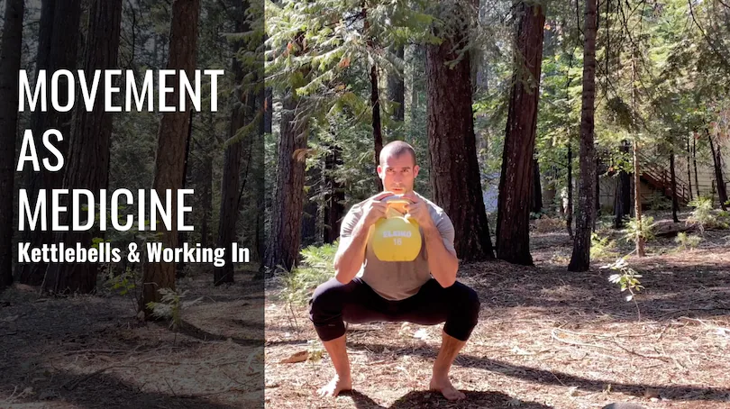

B257 · How To: Movement as Medicine
Hi {first_name},
I hope life is moving through you well! I spent the past weekend in Arnold, California and it was incredibly vitalizing. In this week's YouTube video, with this trip as my inspiration, I share one of the many ways I like to cultivate movement as medicine.
 I first learned this concept from coach and friend, Paul Chek. In his book How to Eat, Move, and Be Healthy, you'll find invaluable information and guidance on this topic he's coined "Working In". If you don't already have this book in your library, I highly recommend it - in fact, it is my number one recommend book to people I come across!
To me, working in is arguably the most powerful and important thing an athlete or anyone aspiring to improve their performance can do. I honestly believe it saved my lifting carreer and took me to a level of performance that would have been very difficult to achive without it healthfully. Working in (energy cultivating activities) provides the potential to sustain and perform working out (energy expenditure activities) optimally.
In this week's video, I share a super simple foundational Kettlebell exercise, along with a complementary bodyweight movement perfect for the health of the spine and building vitality.
Click here to watch the full video to start this vitalizing combo.
I hope you have a lovely day and incorporate movement as medicine into your personal practice. I promise you won't regret it!
Mike |